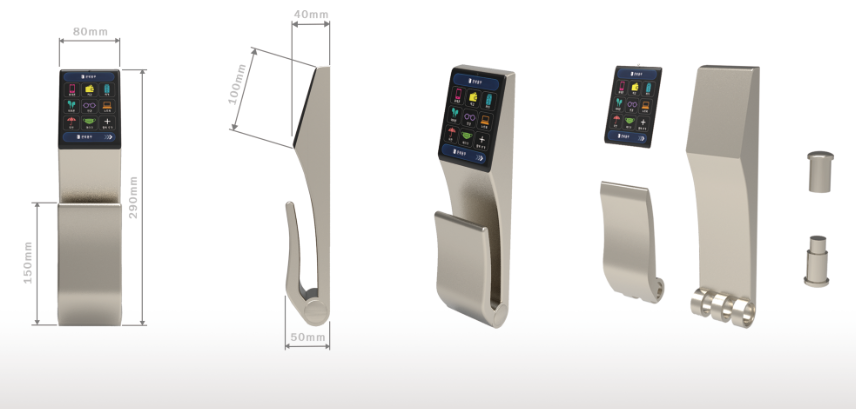

INDUSTRIAL DESIGN PORTFOLIO / 2026
DESIGN FOR
BETTER LIVING.
일상 속 불편함을 관찰하고, 사용자 경험과 제품의 형태를 함께 고민합니다. 두 개의 졸업 프로젝트를 통해 문제 발견부터 설계와 시각화까지의 과정을 소개합니다.
FEATURED PROJECTS.

DESIGN APPROACH.
01
OBSERVE
생활 속 사용 환경과 불편함을 관찰합니다.
02
DEVELOP
아이디어 스케치, 구조 설계, 사용자 흐름을 구체화합니다.
03
COMMUNICATE
렌더링, 도면, 전시를 통해 디자인 의도를 전달합니다.
LET’S TALK.
OPEN CONVERSATION
당신의 의견을 들려주세요.
작품에 대한 감상, 질문, 협업 제안을 남길 수 있는 공간입니다.